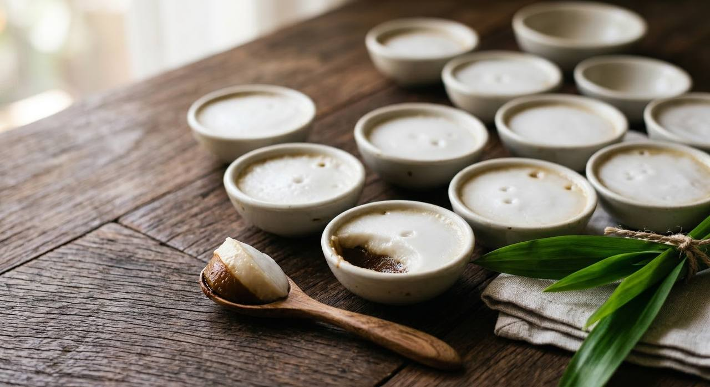

ขนมถ้วย — "dessert in cups". Palm sugar and pandan custard below, salted coconut cream above, steamed in tiny porcelain cups until the top splits into little fat eyes.

The name is the description: ชนมถ้วย, dessert-in-cups. It's steamed in ถ้วยตะไล — small shallow porcelain cups, the shape of a tin-lid candle, stacked in bamboo steamers at temple fairs and morning markets. You buy a cup or two, eat them warm, scrape the last smear out with a tiny wooden spoon, and return the cup to the vendor's tray.
The construction is two layers that must not mix. Below: a soft, dark-brown custard of palm sugar and pandan — the pandan for scent and the colour, the palm sugar for the deep caramel-toffee note. Above: salted coconut cream, set with a little rice flour. Steamed together, the top layer splits into tiny glossy eyes — Thai cooks call it แตกมัน, the fat splitting — and that's the doneness sign. Sweet below, salty above, warm, spooned from the cup.
The flours matter: rice flour for body, tapioca for the soft pull, and a little arrowroot (แป้งท้าวยายม่อม) for that silkiness no western pudding has a name for. Some recipes simplify to rice flour alone; the three-flour version is the classic one.
| Thai | English | Amount |
|---|---|---|
| The bottom layer (ตัวขนม) | ||
| แป้งข้าวเจ้า | Rice flour | 180 g |
| แป้งมัน | Tapioca flour | 80 g |
| แป้งท้าวยายม่อม | Arrowroot flour | 2 tbsp |
| กะทิ | Coconut milk | 200 g |
| น้ำตาลปี๊บ | Palm sugar | 250 g |
| น้ำ (รวมน้ำปั่นใบเตย) | Water — including what's used to blend the pandan | 700 ml |
| ใบเตย | Pandan leaves | 1 cup |
| The top layer (หน้าขนม) | ||
| หัวกะทิ | Coconut cream | 600 ml |
| น้ำ | Water | 150 ml |
| แป้งข้าวเจ้า | Rice flour | 70 g |
| เกลือป่น | Salt | 2 tsp |
| น้ำตาลทราย | Sugar | 30 g |
| Equipment: ถ้วยตะไล — small porcelain cups (or the aluminium set Thai grocers sell) | ||
The flour blend. Three flours — rice, tapioca, arrowroot — in the TrueID and aroifin versions, against rice flour plus arrowroot only in the Wongnai home recipe. The tapioca is the pull; its absence makes a firmer, less silky cup.
Pandan or jasmine. Pandan water is the standard scent. A few old temple recipes use jasmine-scented water instead, with a white custard. Pandan is the one you'll find.
The top layer's thickness. Sources differ on how much rice flour the coconut layer carries — from 70 g per 600 ml of cream down to five tablespoons. The thicker one holds its shape; the thinner one splits more freely.
Palm sugar vs white sugar. The classic is palm sugar — brown, toffee-deep. Market versions sometimes use white sugar plus colouring for a uniform batch; the taste gives them away.
The doneness sign. All sources agree on the split top — แตกมัน, the fat splitting into little eyes — as the sign to stop steaming.
This recipe is translated from the following Thai-language sources. Where they disagree, we've said so.
1. TrueID Food — "สูตรทำ ขนมถ้วยใบเตย สูตรนุ่ม ละมุน ขายดี" (full three-flour quantities and method) — food.trueid.net
2. Wongnai — "วิธีทำ ขนมถ้วยน้ำตาลปี๊บ" (the palm-sugar home version) — wongnai.com
3. aroifin — "วิธีทำ ขนมถ้วยใบเตย" (the kneading, the rest, the แตกมัน sign) — aroifin.com